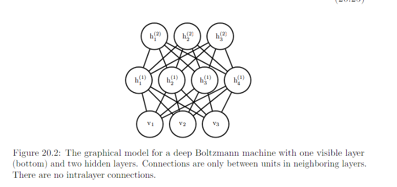
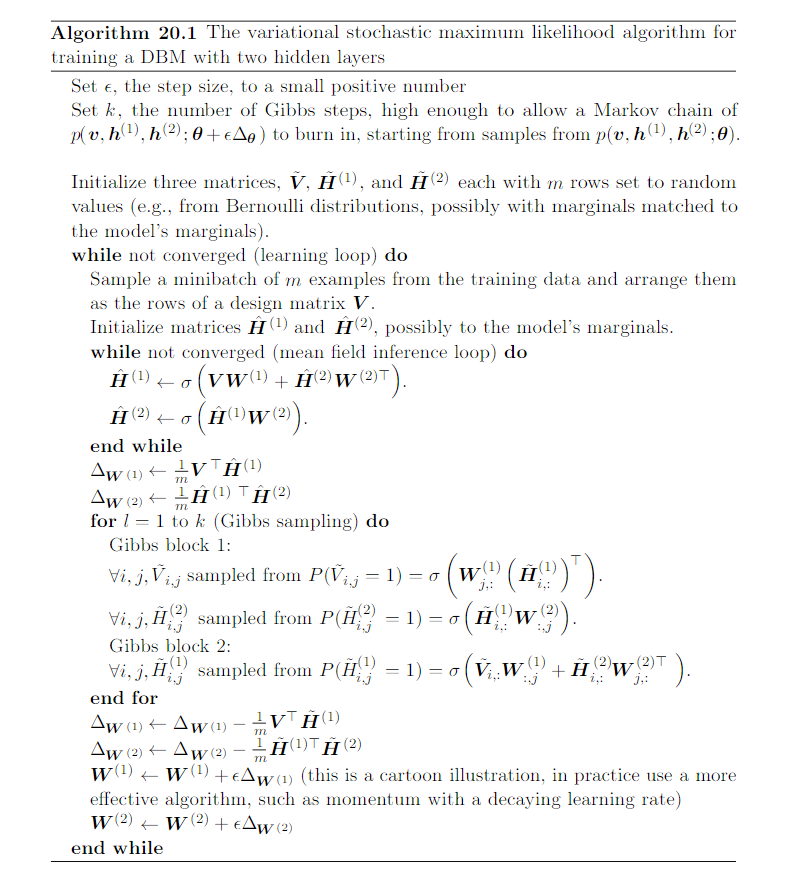

20.4 Deep Boltzmann Machines¶
Deep Boltzmann Machines
- Entirely undirected model
- Several layer of latent variables
- Within each layer, each of the variables are mutually independent, conditioned on the variable in the neighboring layers.
- Energy based model
Review on energy based model:
Many interesting theoretical results about undirected models depend on the assumption that \(\forall x, \hat{p}(x) > 0\). A convinient way to enforce this condition is to use energy based model (EBM) where
and E(x), aka, energy function. By learning the energy function, we can use unconstrained optimization. Any distriburuib of the form given by the equation above is an example to Boltzmann distribution.
e.g. DBM with 1 layer of visible variables and 3 hidden layers:
Advantages offered by DBM, similar to RBM: can be organized into a bipartite graph. With odd layer on one side and even layer on the other. When we condition on the variables in the even layer, the variables in the odd layers become conditionally independent, vice versa.

E.g of 2 hidden layers:
The bipartite structure makes Gibbs sampling in the deep Boltzmann Machine efficient. It is possible to update all units in only 2 iterations. Gibbs sampling can be divided into 2 blocks of updates, one including even layers including v and the other including all odd layers. Because of the bipartite DBM connection pattern, gievn the even layers, the distribution over the odd layers is factorial and thus can be sampled simultaneously and independently as a block, vice versa. Efficient sampling is especially important for training with the stochastic maximum likehood algorithm.
20.4.1 Intersting Properties¶
Compared to DBN, the posterior distribution P(h|v) is simpler for DBM. In DBMs. all the hidden units within a layer are conditionally independent given the other layers. This lack of intralayer interaction makes it possible to use fixed-point equitions to optimize the variational lower bound and find the true optimal mean field expectation.
Unfortunate property of DBMs: sampling from them is relatively difficult.
- DBNs: MCMC sampling in their top pair of layers. The other layers are used at the end of the sampling process, in one efficient ancestral sampling pass.
- DBMs: necessary to use MCMC accorss all layers, with every layer of the model participating in every Markov Chain transition.
20.4.3 DBM Mean Field Inference¶
- Conditional distribution over one DBM layer given the neighboring layers is factorial.
- The distribution over all hidden layers generally does not factorize because of interaction between layers.
The mean field approximation is a simple form of variational distribution, where we restrict the approximating distribution to fully factorial distribution.
Review Variational Inference and Learning:
Core idea of variational learning: We can maximize L over a restricted family of distribution q.
Common restriction:
Called mean field approach.
In the case of approximating posterior distribution over hidden units given the visible units, we restrict the approximating family to the set of distribution where the hidden units are conditionally independent. e.g: DBM with 2 hidden layers: Let \(Q(h^{(1)}, h^{(2)} | v)\) be the approximation of \(P(h^{(1)}, h^{(2)} | v)\)
Importantly, the inference process must be run again to find a different distribution Q every time we use a new value of v.
Gold of mean field approach, minimize:
We associate the probability of eah element of \(h^{(1)}\) with a parameter.
- For each j, \(\hat{h}^{(1)}_j = Q(h^{(1)}_j = 1 | v)\) where \(\hat{h}^{(1)}_j \in [0, 1]\)
- For each k, \(\hat{h}^{(2)}_k = Q(h^{(2)}_k = 1 | v)\) where \(\hat{h}^{(2)}_k \in [0, 1]\)
Now we have
For DBMs with more layers, the approximate posterior parameterization can be extended in the obvious way, updating all the even layers simultaneously and then update all the odd layers simulteneously, following the same schedule as Gibbs sampling.
Now that we have specified our family of approximating distribution Q, it remains to specify a procedure for choosing the member of this family that best fits p. The most straight-forward way is shown below.
Review on 19.4.3:
For the model with continuous latent variable. If we have mean field assumption:
and fix \(q(h_j|v)\) for all \(j \neq i\). Then the optimal \(q(h_i|v)\) maybe obtained by normalizing the unnormalized distribution
Applying these genarl equitions, we obtain the update rules
These fixed_point update equition define an iterative algorithm where we alternate updates of \(\hat{h}^{(1)}_j\) and \(\hat{h}_k^{(2)}\)
For deep Boltzmann Machine with 2 hidden layer, ELBO is given by
The hardness results for computing the partition function that apply to restricted Boltzmann machines also apply to deep Boltzmann machines.
Evauating the probability mass function of Boltzmann machine requires approximate methods such as annealed importance sampling.
Training the model requires approximation to th egradient of the log partition function. DBMs are typically trained using stochastic maximum likehood..
- pseudolikehood require the ability to evaluate the unnormalized probabilities, rather than only obtain a variational lower bound on them
- Contrastive Divergence is slow for DBMs because they do not allow efficient sampling of hidden units given the visible units
Review on Annealed Importance Sampling: 18.7
20.4.4 Layer-Wise Pretraining¶
Train a DBM using stochastic maximum likehood from a random initiallization usually results in failure.
- In some cases, the model fails to learn to represent the distribution adequately.
- In other cases, the DBM may represent the distribution well, but with no higher likehood than could be obtained with just an RBM.
Greedy layer wise pretraining: each layer of the DBM is trained in isolation as an RBM. The first layer is train to model the imput data. Each subsequent RBM is trained to model samples from the previous RBM’s posterior distribution. After all the RBMs have been trained in this way, they can be combined to form a DBM. The DBM may then be trained with OCD. Typically the PCD will make only a small change in the model’s parameters and in its performance as measured by the log-likehood it assignes to the data, or its ability to classify inputs.

In DBM, the RBM parameters must be modified before inclusion in the DBM. A layer in the middle of the stack of RBM is trained with only bottom-up input, but after the stack is combined to form the DBM, the layer will have both bottom-up and top-down input. To acount for this effect, divide the weights of all but the top and bottom RBM in half before inserting them into the DBM.
20.4.5 Jointly training Deep Boltzmann Machines¶
Cause: Classic DBMs require greedy unsupervised pretraining and, to perform classification well, require a seperate MLP-based classifier on top of the hidden features they extract.
Challenge: Har to tell how our hyperparameters are working until quite late in the training process
2 Main Solutions
- Centered deep Boltzmann Machine, which reparameterizes the model in order to make the Hessian of the cost function better conditioned at the beginning the learning process. Can be trained without a greedy layer-wise pretraining stage. Excellent test set log-likehood and produce high quality samples. Unfortunately, remain unable to compete with appropriately regularize MLPs as a classifier.
- Multi-prediction deep Boltzmann machine. Uses an alternative training criterion that allows the use of the back-propagation algorithm to avoid the problem with MCMC estimates of the gradient. New criterion does not lead to good likehood or samples. Compared to the MCMC approach, it does lead to superior classification performance and ability to reason well about the missing inputs.
Reviwe on Hessian Matrices: textbook p84
Energy function function of Boltzmann machines:
Centereed Boltzmann machine introduces a vector \(\mu\) that is substracted from all the states:
Typically \(\mu\) is a hyperparameter fixed at the beginning of the training. It is usually chosen to make sure that \(x - \mu \approx 0\) when the model is initialized. Improved conditioning of the Hessian matrix enables learning to succeed, even in difficult cases like training a deep Boltzmann machine with multiple layers.
Multi-prediction DB views the mean field equition as defining a familt of recurrent networks for approximately solving possible inference problem. Rather than training the model to maximize the likehood, the model is trained to make each recurrent network obtain an accurate answer to the corresponding inference problem. Process:

Final loss is typically based on the approximate conditional distribution that the approximate inference network imposes over the missing values.
Backpropagation through inference graph has 2 main advantages
It trains the model as it is really used, with approximate inference.
- The orginal DBM does not make accurate classifier on its own, the best classification results with the original DBM were based on training a seperate classifier to use features extracted by the DBM
- MP-DBM uses inference in the DBM to compute the distribution oever the class labels. Mean field inference in the MP-DBM performs well as a classifier without special modification.
Back-propagation computes the exact gradient of the loss. Better for optimzation than the approximate gradient of SML training, which suffer from both bias and variance.
Disadvantage of back-propagation through the approximate inference graph is that it does not provide a way to optimize the log-likehood, but rather gives a heuristic approximation of the generalized pseudolikehood.
Compare to dropout
- Dropout: share parameters among mant different computational graphs, with different between each graph being whether it includs or excludes each unit
- MP-DBM also shares parameters accross many computational graphs. The difference between the graph is wethher each input units is observed or not. When a unit is not observed, then MP-DBM does not delete in entirely as dropout does. Instead, the MP-DBM treats it as a latent variable to be inferred.